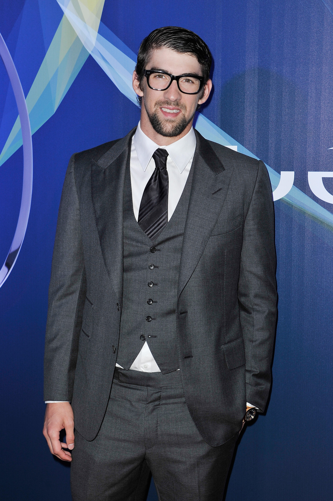
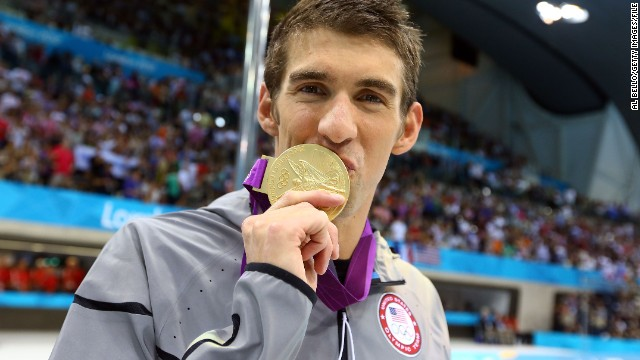
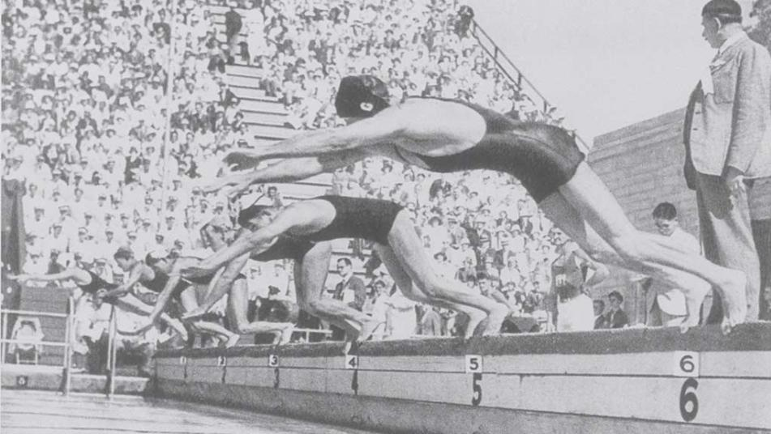
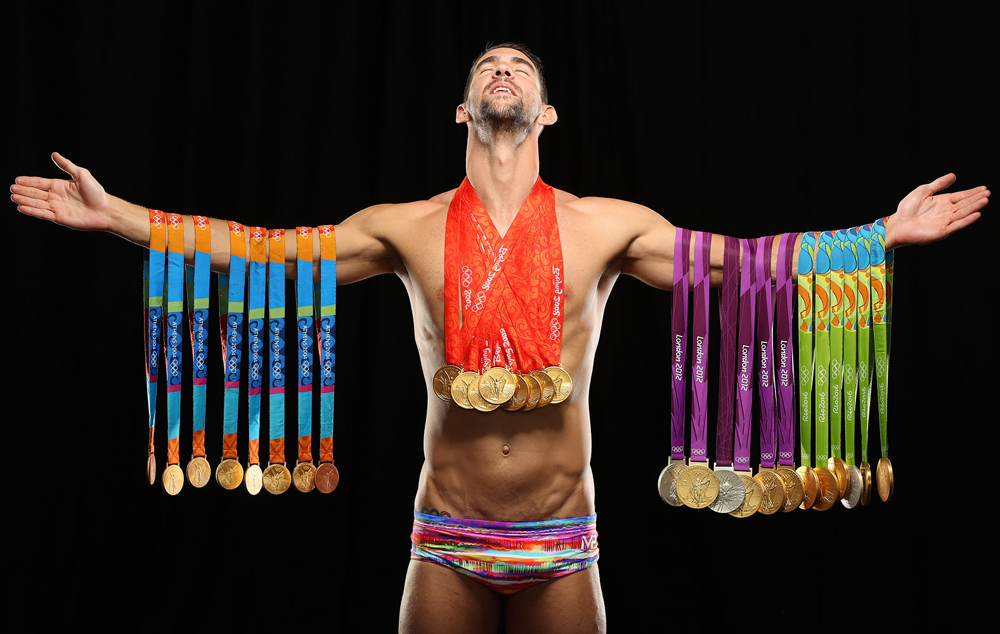
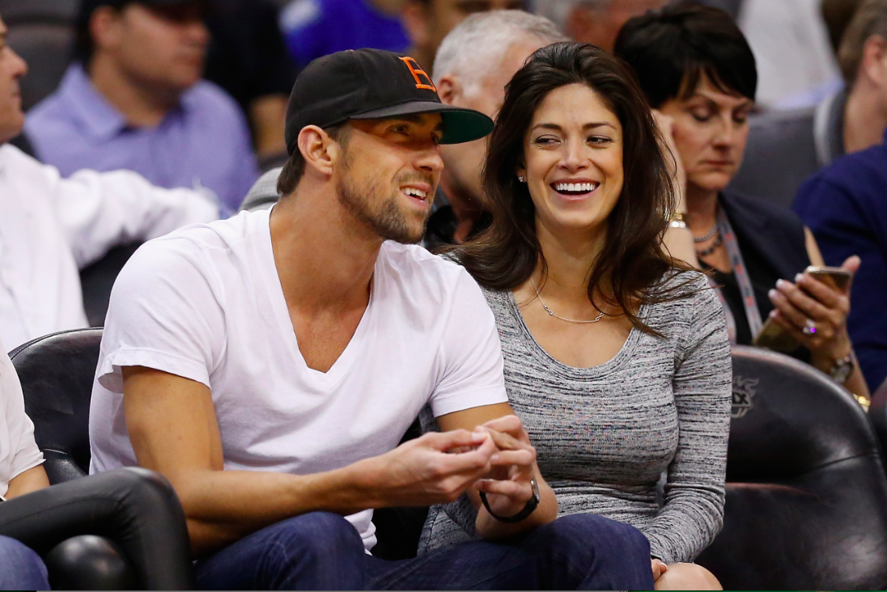
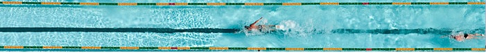

Home

Michael Fred Phelps II (Baltimore, 30 de junho de 1985) é um ex-nadador norte-americano, conquistou trinta e sete recordes mundiais e conquistou o maior número de medalhas de ouro (nove) olímpicas em uma única edição, feito este realizado nos Jogos de Pequim, na China, em agosto de 2008. Diante dos seus resultados, Phelps superou as oito medalhas de ouro... clique para ver mais sobre a biografia

Michael Phelps foi eleito o melhor atleta clique para ver mais sobre notícias

Apesar de não ser um exercício tão natural para clique para ver mais sobre a história do esporte

Encontre fotos e vídeos na galeria clique para ver mais sobre a galeria


Phelps nasceu e foi criado em Baltimore clique para ver mais sobre o pessoal